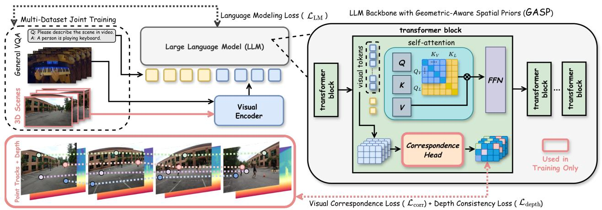
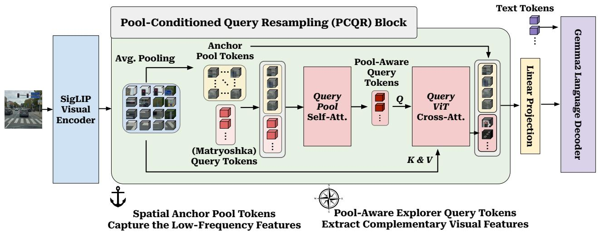
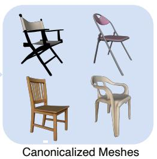
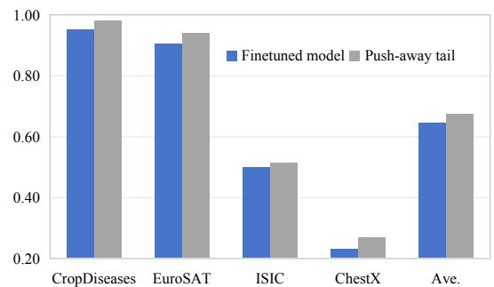
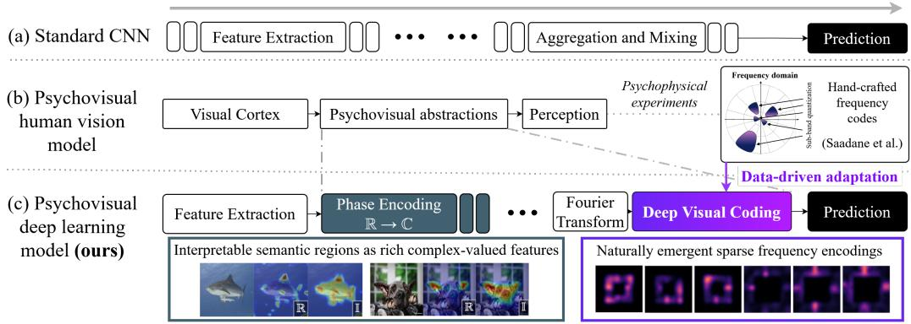
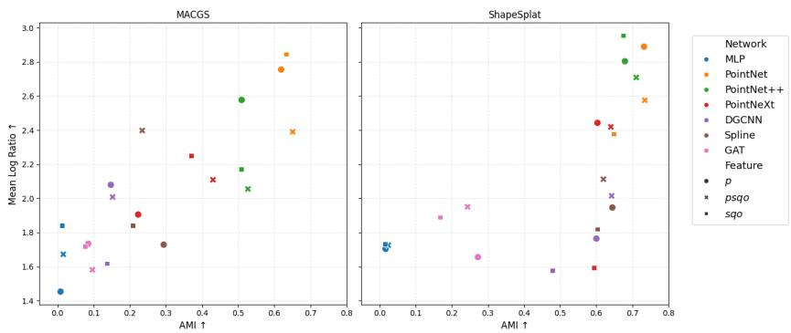
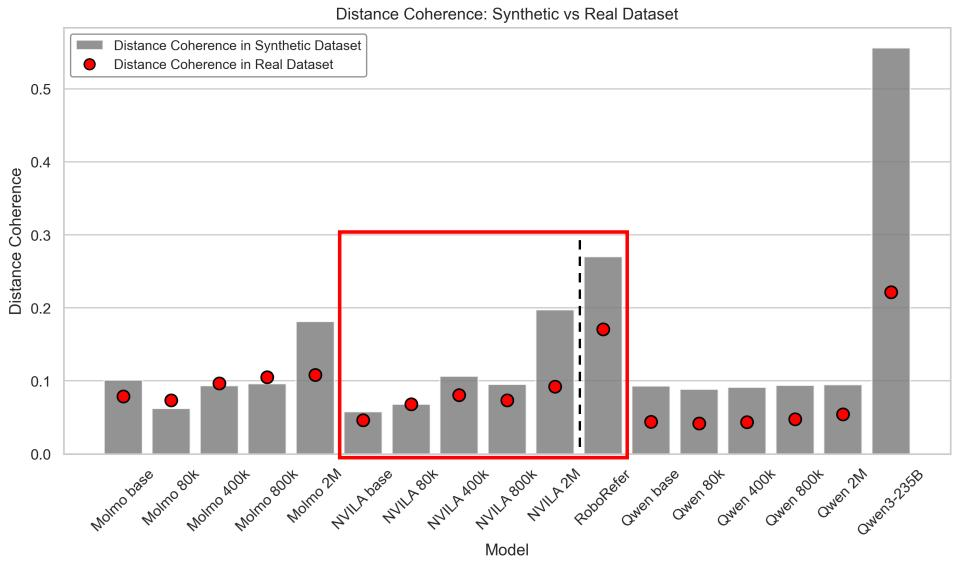

5 月 30 日：Cycle Consistency in Video Object-Centric 等视觉表征论文归档
本页按日期归档近期论文，保留优先级、主题、来源与方法线索，方便回看同一批工作的研究脉络。
先读 Cycle Consistency in Video Object-Centric。自监督视频 object-centric learning，提出隐式 cycle consistency 避免 slot collapse，直接命中通用视频表征。 其余论文按 P1/P2 与主题顺序扫读，重点看方法图、消融设置和是否能迁移到通用视觉表征。
论文索引
 P0
P0
Cycle Consistency in Video Object-Centric Learning
高相关；详见方法、贡献和实验边界。
方法：自监督视频 object-centric learning，提出隐式 cycle consistency 避免 slot collapse，直接命中通用视频表征
 P0
P0
LoMo: Local Modality Substitution for Deeper Vision-Language Fusion
高相关；详见方法、贡献和实验边界。
方法：用局部模态替换暴露 VLM 对文本/图像载体的表征不等价，适合指导视觉-语言自监督数据与目标设计

P0Beyond 3D VQAs: Injecting 3D Spatial Priors into Vision-Language Models for Enhanced Geometric Reasoning
高相关；详见方法、贡献和实验边界。
方法：GASP 用 contrastive correspondence 与 depth consistency 学几何先验，比单纯 3D VQA 微调更接近空间表征预训练
 P0
P0
GPIC: A Giant Permissive Image Corpus for Visual Generation
高相关；详见方法、贡献和实验边界。
方法：1 亿训练图像、VLM caption、许可友好与去重安全过滤，适合作为视觉生成/基础模型预训练数据源观察
 P1
P1
TRACER: Persistent Regularization for Robust Multimodal Finetuning
中高相关；详见方法、贡献和实验边界。
方法：从多模态 contrastive finetuning 理论解释 self-distillation，并提出 WMA teacher 防止 EMA collapse

P1PARCEL: Pool-Anchored Resampling with Conditioned Elastic Queries for Efficient Vision-Language Understanding
中高相关；详见方法、贡献和实验边界。
方法：把低频 layout anchor 与 elastic query 分工，关注 visual-token representation 在不同预算下如何保持空间与细节

P1Geometry Matters: 3D Foundation Priors for Learning Semantic Correspondence
中高相关；详见方法、贡献和实验边界。
方法：用 3D foundation priors 补 DINO/Stable Diffusion 2D 特征的几何盲点，适合关注 foundation feature 后训练

P1Improving CLIP Adaptation by Breaking Tail Alignment for Source-Free Cross-Domain Few-Shot Learning
中高相关；详见方法、贡献和实验边界。
方法：重新解释 CLIP patch-token 对齐：低语义 tail tokens 不应强行贴近文本，提示对比表征微调要更细粒度
 P2
P2
EarlyTom: Early Token Compression Completes Fast Video Understanding
中相关；详见方法、贡献和实验边界。
方法：训练-free 地在视觉编码器内部早期压缩 video tokens，补足只在 LLM 前压缩的效率盲点

P2Deep Psychovisual Image Representations
中相关；详见方法、贡献和实验边界。
方法：学习频域 psychovisual-style abstraction，提供可解释中间图像表征路线，和常规 CNN/ViT 堆叠形成互补

P2Learning Representations from 3D Gaussian Splats
中相关；详见方法、贡献和实验边界。
方法：系统比较 3DGS 场景表示上的 latent representation、linear probing 与 clustering，连接 3D 表征与视图合成资产
 P3
P3
Veda: Scalable Video Diffusion via Distilled Sparse Attention
中相关；详见方法、贡献和实验边界。
方法：把 full attention 蒸馏成 tile-wise sparse attention，主要服务视频生成扩展，但可借鉴到视频预训练计算结构
 P3
P3
Grounded 3D-Aware Spatial Vision-Language Modeling
中相关；详见方法、贡献和实验边界。
方法：GR3D 将显式/隐式 2D grounding 与 monocular 3D grounding 统一，偏 VLM 空间推理但对 grounding 表征有参考
 扫读
扫读
OccamToken: Efficient VLM Inference with Training-Free and Budget-Adaptive Token Pruning
中低相关；详见方法、贡献和实验边界。
方法：用 register-anchored relative evidence testing 做训练-free token pruning，适合和 PARCEL/EarlyTom 对照扫读

扫读Why Far Looks Up: Probing Spatial Representation in Vision-Language Models
中低相关；详见方法、贡献和实验边界。
方法：用最小 contrastive pairs 诊断 VLM embedding 的垂直-距离纠缠，是空间表征偏置分析